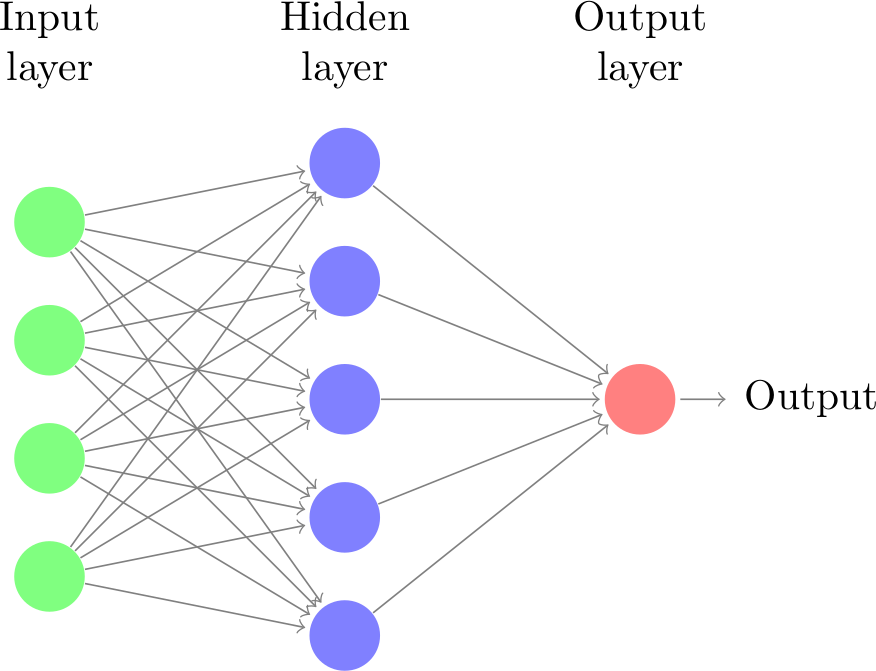
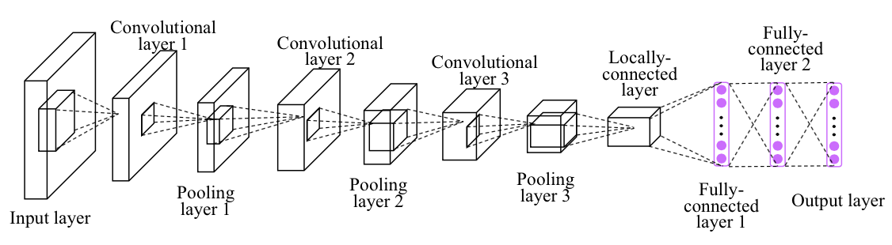
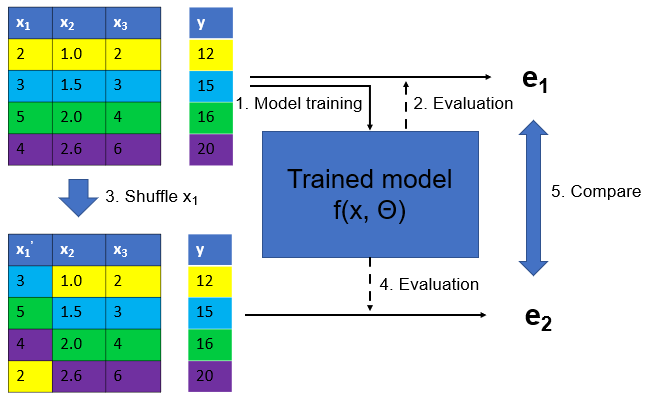
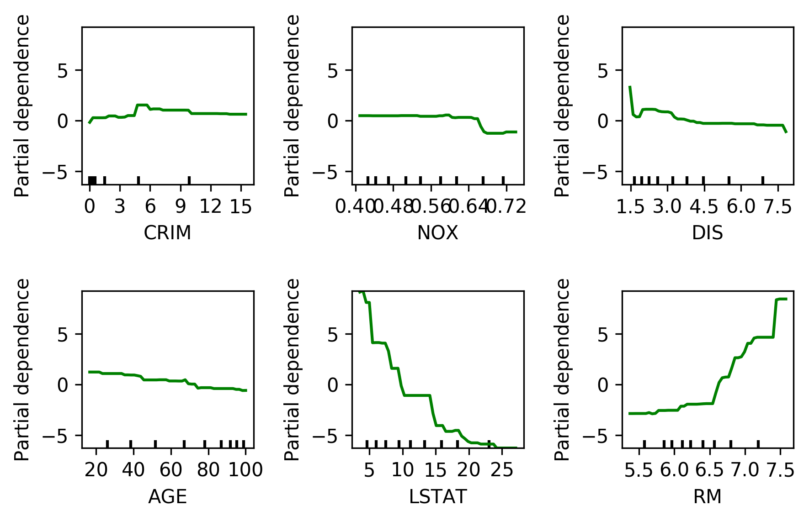
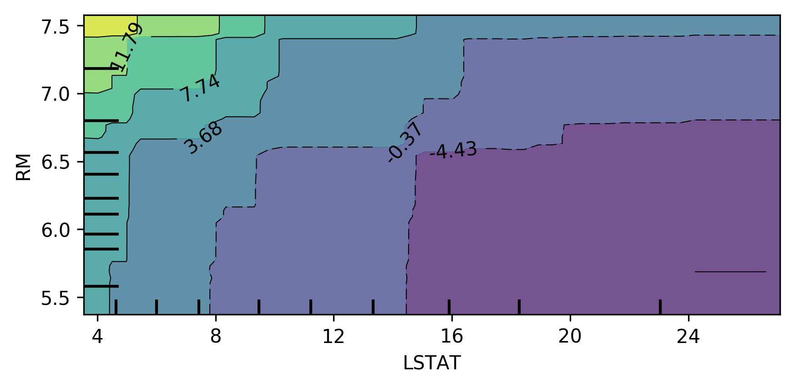
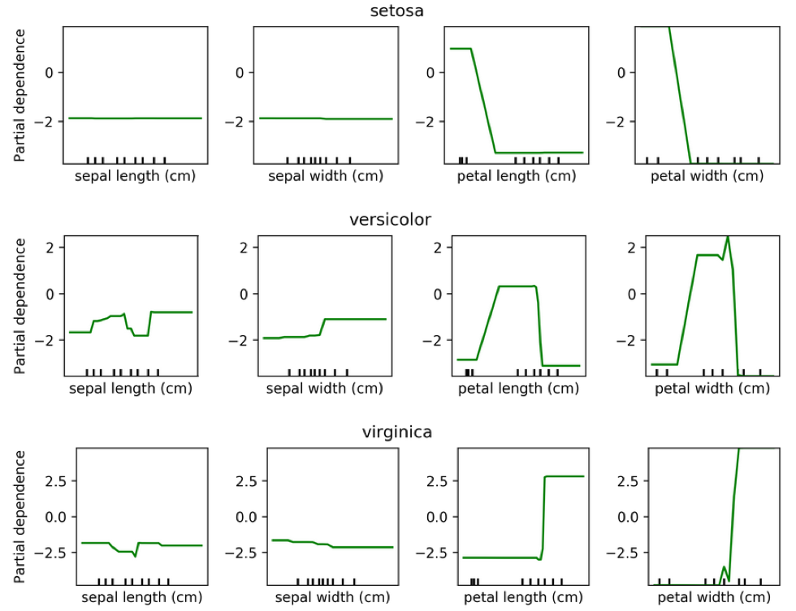
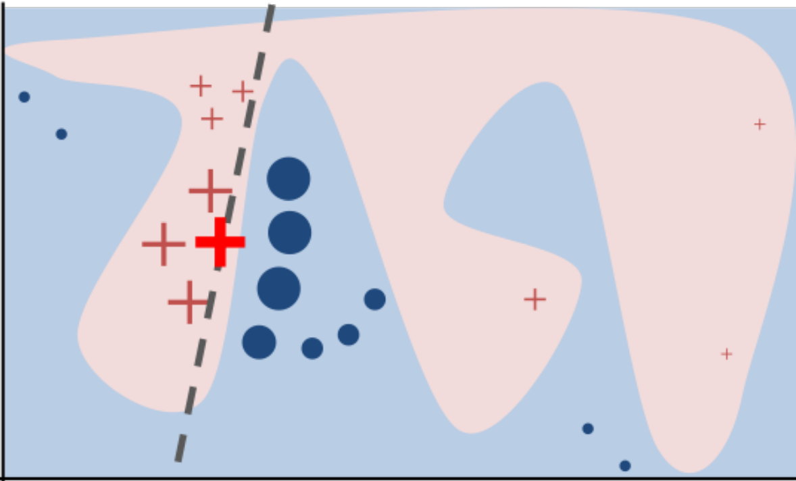
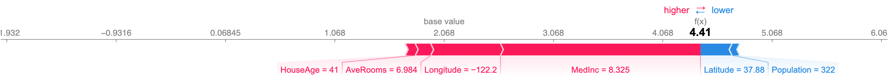
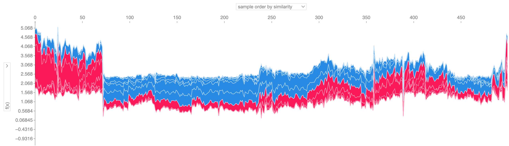
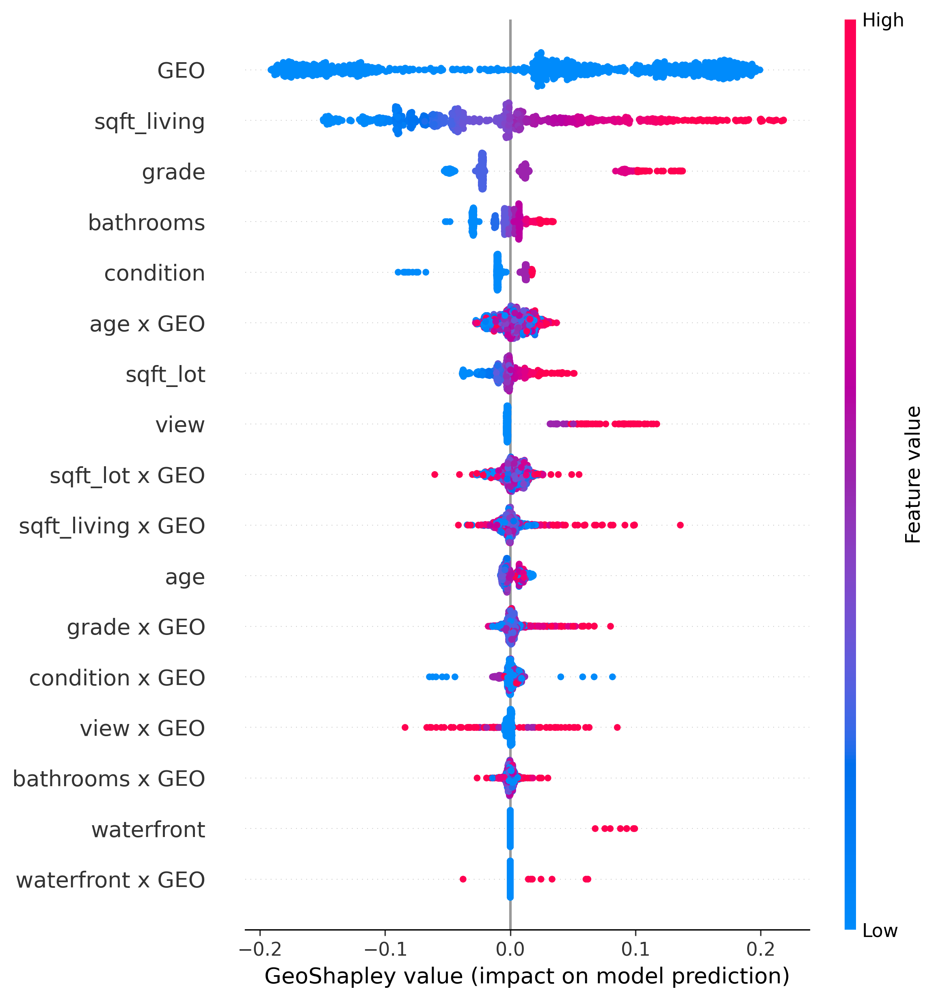

Model Interpretation
Huanfa Chen - huanfa.chen@ucl.ac.uk
13/12/2025
Recap: Neural Networks (or MLP)

Recap: Convolutional Neural Networks (CNN)
- Local filter
- Translation invariance


Recap: Graph Neural Networks (GNN)

From this week …
- No new algorithms
- More on how to apply and interpret models
- W07: Model interpretation techniques
- W08: Feature selection methods
- W09: Testing ML codes
- W10: Handling imbalanced data
Model Interpretation (Post-hoc Explanability)
- It involves taking a pre-trained model and using a separate method to explain its decisions
- It belongs to a broader field of Interpretable Machine Learning and Explainable AI (XAI)
- It differs from interpretable models (e.g., linear regression, decision trees), which are designed to be inherently interpretable
What Post-hoc Explanability isn’t …
- This is NOT inference or estimating variable relationships
- This is NOT causality
- Still useful for feature selection and understanding black-box model behaviours
Explaining the Model != Explaining the Data
- Model inspection only tells you about the model
- The model might not accurately reflect the data
- Don’t explain a model with low accuracy
Two types of Post-hoc Explanations
Explain model globally
- How does the model depend on each feature?
- Often in some form of marginals (e.g.,
feature importance) - Note that there many types of “feature importance” and they can give very different results!
- Always ask one question: “what is the definition of feature importance?”
Explain model locally
- Why did it classify this data point this way?
- Explanation will be different for each point
- “What is the minimum change to classify it differently?”
Methods
Global:
- Coefficients (❌)
- Sklearn feature importance (❌)
- Drop-feature importance (❌)
- Permutation importance (✔️)
- Partial dependence plots (✔️)
Local:
- LIME (✔️)
- SHAP values (✔️)
Permutation Importance
Idea: measure marginal influence of a feature by permuting it and measuring the drop in accuracy
Permutation Importance
\[I_i^\text{perm} = \text{Acc}(f, X, y) - \mathbb{E}_{x_i}\left[\text{Acc}(f(x_i, X_{-i}), y)\right]\]
def permutation_importance(est, X, y, n_repeat=100):
baseline_score = estimator.score(X, y)
for f_idx in range(X.shape[1]):
for repeat in range(n_repeat):
X_new = X.copy()
X_new[:, f_idx] = np.random.shuffle(X[:, f_idx])
feature_score = estimator.score(X_new, y)
scores[f_idx, repeat] = baseline_score - feature_score- Stay with the same trained model
- Model agnostic (works for any ML model)
- Can deal with correlated features better
- Can maintain the distribution of a feature
- Can run slow (need to re-evaluate models many times: n_features * n_repeats model evaluations)
Alternatives of permutation importance
- Drop-feature importance (not recommended)
- Idea: to measure importance of x1 for y=f(x1, x2, x3), it drops x1 and refits y=g(x2, x3), and then compare accuracy of f() and g()
- It refits a new model for each feature removal
- Doesn’t really explain model (refits for each feature)
- Can’t deal with correlated features well
Alternatives of permutation importance
- sklearn tree-based feature importance
- Only applicable to tree-based models in sklearn
- For a tree: FI = total reduction of the criterion (e.g., Gini, MSE) brought by that feature
- For a forest: average FI over all trees
Problems with sklearn tree-based feature importance
- Biased towards high-cardinality features (cardinality = number of unique values)
- Can be misleading when features are correlated
- Not recommended
Partial Dependence Plots
- Marginal dependence of prediction on one (or two) features across differnt values
\[f_i^{\text{pdp}}(x_i) = \mathbb{E}_{X_{-i}}\left[f(x_i, x_{-i})\right]\]
- Idea: Get marginal predictions given feature
- How? “Integrate out” other features using validation data
PDP
from sklearn.inspection import plot_partial_dependence
boston = load_boston()
X_train, X_test, y_train, y_test = train_test_split(boston.data, boston.target,random_state=0)
gbrt = GradientBoostingRegressor().fit(X_train, y_train)
fig, axs = plot_partial_dependence(gbrt, X_train, np.argsort(gbrt.feature_importances_)[-6:], feature_names=boston.feature_names)
Bivariate Partial Dependence Plots

Partial Dependence for Classification

LIME
- Build sparse linear local model around each data point
- Explain prediction for each point locally
- Paper: “Why Should I Trust You?” Explaining the Predictions of Any Classifier
- Implementation: ELI5, https://github.com/marcotcr/lime

SHAP
- Build around idea of Shapley values (from game theory, proposed by Lloyd Shapley in 1953)
- Shapley values: a fair way to distribute “payout” among N players in a game, based on their marginal contributions across all possible coalitions
Shapley value
- A fair way to distribute “payout” among N players in a game
- Example in housing price: how much does each factor contribute to the house price?
- What we want to see: park-nearby contributed €30,000; area-50 contributed €10,000; floor-2nd contributed €0; cat-ban contributed -€50,000. But HOW?

Shapley value (cont.)
- Checking all possible coalition …

Shapley value (cont.)
- To compute payout for cat-ban, we need to check all combinations (with & without cat-ban), and take the difference in predicted price. This payout is (weighted) average of these differences across all combinations.
- If a feature is not in the coalition, we replace it with some baseline (e.g. mean).
- park-nearby, area-50, floor-2nd
- park-nearby, area-50
- park-nearby, floor-2nd
- area-50, floor-2nd
- park-nearby
- area-50
- floor-2nd
- {} (empty coalition)
Shapley value (Let’s try again)
- Assume 4 players, to compute Shapley value for player 1:
- Consider all subsets of players not including player 1: {}, {2}, {3}, {4}, {2,3}, {2,4}, {3,4}
- For each subset S, compute marginal contribution of player 1: \(v(S ∪ {1}) - v(S)\)
- Weight each marginal contribution by the number of ways to arrange players in S and N \ S \ {1}
- Sum weighted contributions to get φ₁(v)
Shapley value
- Example of Shapley value for bike rental prediction
- The sum of Shapley values yields the difference of actual and average prediction (422).
- The temperature & humidity had the largest positive contributions.

Shapley value (game theory)
- Shapley value is the only attribution method that satisfies following properties
- Efficiency: sum of attributions = difference between actual output and average output
- Symmetry: if two features contribute equally, they get same attribution
- Dummy: if a feature does not affect the output, its attribution is zero
- Additivity: for two models, attributions add up. (Think about a random forest with many trees, the Shapley values of the forest is the avereage of SHAP values of each tree)
From Shapely values to SHAP
- SHAP (SHapley Additive exPlanations) is a unified framework for explaining ML predictions, based on Shapley values
- Shapely values were proposed in 1953
- In 2017, Lundberg and Lee proposed SHAP for explaining ML models.
- assume the explanation as a linear model of binary variables indicating presence/absence of features
- allows local / per sample explanations, and global explanations (by averaging)
- introduced effecient estimation of KernelSHAP and TreeSHAP
SHAP
SHAP assumes the prediction of a data point is the sum of effects of each feature. It defines:
\[g(z') = \phi_0 + \sum_{i=1}^{M} \phi_i z'_i\]
- \(\phi_0\): The base value (the average prediction of the model across the dataset).
- \(\phi_i\): The SHAP value (the contribution of feature \(i\)).
- \(z'_i \in \{0, 1\}^M\): A binary vector representing whether a feature is present or absent.
- \(M\): The number of input features.
Computing SHAP
- The original Shapley values are computationally expensive (exponential in number of features)
- SHAP introduced efficient estimation methods:
- KernelSHAP: model-agnostic, uses sampling to estimate SHAP values (model agnostic)
- Permutation SHAP: approximate method using permutations, similar to permutation importance
- TreeSHAP: efficient exact computation for tree-based models
SHAP example
- Y variable: median house value for California districts (in $100,000)
| Feature | Description |
|---|---|
| MedInc | Median income in block group |
| HouseAge | Median house age in block group |
| AveRooms | Average number of rooms per household |
| AveBedrms | Average number of bedrooms per household |
| Population | Block group population |
| AveOccup | Average number of household members |
| Latitude | Block group latitude |
| Longitude | Block group longitude |
- Spatial unit: A block group typically has a population of 600 to 3,000 people; similar to output area in UK
- Source: https://www.dcc.fc.up.pt/~ltorgo/Regression/cal_housing.html
SHAP waterfall plot

SHAP force plots

SHAP force plots for multiple samples

- Use with caution!
SHAP Summary Plot

SHAP Feature Importance
- Defined as the mean absolute values of SHAP across all samples

GeoShapley
- Explains any model that takes tabular data + spatial features (e.g., coordinates)
- Source: https://github.com/Ziqi-Li/geoshapley

Key Takeaways
- Model interpretation is about explaining a trained model, not the data
- Post-hoc explanations can be global (feature importance, PDP, SHAP) or local (LIME, SHAP)
- Permutation importance is better than drop-feature importance and sklearn tree-based feature importance
- SHAP is a unified framework for explaining ML predictions, based on Shapley values from game theory
- SHAP is different from Shapley values!
- These methods are model agnostic
Questions?

© CASA | ucl.ac.uk/bartlett/casa